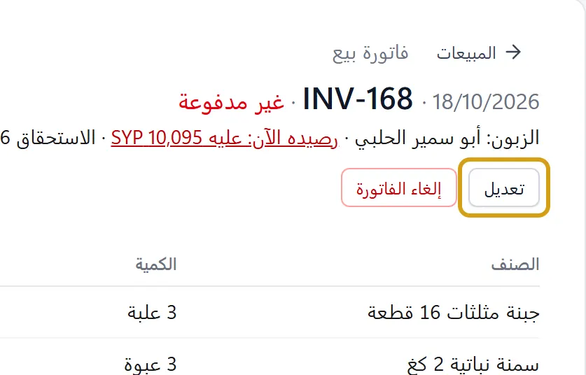
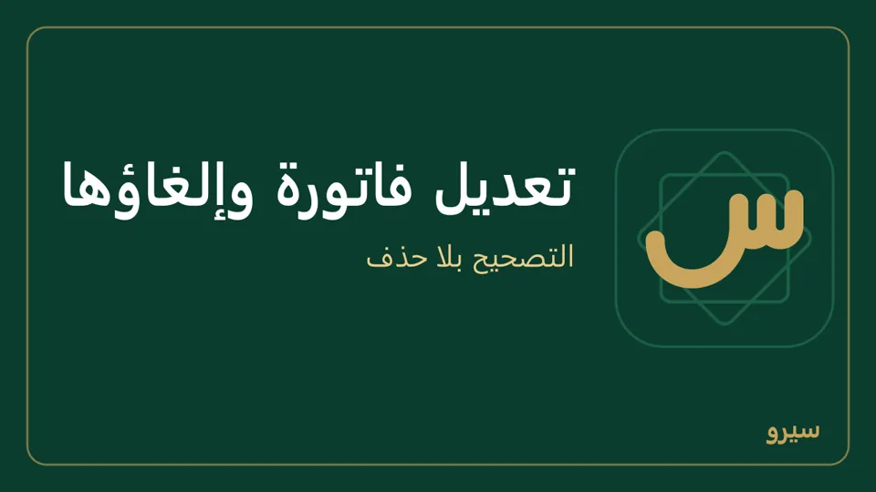

تعديل فاتورة بعد حفظها
- افتح الفاتورة (من المبيعات أو المشتريات، أو بالبحث برقمها).
- اضغط تعديل: تُفتح معبّأة فتصحّح الأصناف والكميات والأسعار.


- طريقة الدفع والمدفوع الآن تبدأ كما دُفعت الأصلية، فغيّرها إن دُفعت الآن أو دُفع جزء منها (على الجوال: نقدي أو آجل والمدفوع الآن). فاتورة دُفعت بأكثر من طريقة تُفتح على عدّة طرق بما أخذته كل طريقة، وتبقى دفعاتها كما هي ما لم تغيّر طريقة أو مبلغاً.
- اكتب سبب التعديل واضغط حفظ. تبقى الأصلية في الدفاتر ملغاة بقيد عكسي عليه السبب، وتأخذ المعدّلة رقماً جديداً، وسندات القبض أو الدفع التي كانت عليها تنتقل إليها.

- المعدّلة تحتاج موافقة؟ لا يُحفظ التعديل وتبقى الأصلية كما هي. صحّح الفرق بمرتجع أو إشعار، أو ألغِ الفاتورة وسجّل غيرها فتنتظر الموافقة (والبيع خارج الحسابات حتى يوافَق عليها). حدّث كل الأجهزة: نسخة أقدم تحفظ التعديل بانتظار الموافقة وتُلغي الأصلية، فإن رُفض ضاع البيع من الحسابات.
- في كشف حساب الزبون يظهر التعديل ثلاثة أسطر: الأصلية، و«إلغاء فاتورة بيع» يعكسها كلها مع ما دُفع منها عند حفظها، ثم المعدّلة بدفعتها من جديد. فالدفعة تُحسب مرة واحدة، والرصيد بعدها = المعدّلة ناقص ما دُفع منها. سند القبض الذي كان على الأصلية ينتقل إلى المعدّلة وحده، فلا تكتبه مرة ثانية في المدفوع الآن: كتابته هناك تسجّل الدفعة مرتين ويصير للزبون رصيد زائد. إن حصل ذلك فعدّل المعدّلة مرة أخرى وأرجع المدفوع الآن إلى ما دُفع فعلاً عند البيع.
- فاتورة دُفع عليها أكثر من مبلغها وبقيت الزيادة بحساب الزبون: في التعديل يبدأ المدفوع الآن بكل ما دفعه (الفاتورة مع الزيادة)، واختر تبقى بحسابه (دفعة على حسابه) (على الجوال تبقى بحسابه) كما عند البيع. يُلغى سند الزيادة القديم ويُسجَّل بدلاً منه ما تكتبه الآن، فلا تتكرر الزيادة مهما عدّلت. وإن مسحت المدفوع الآن تُعدّ الفاتورة مدفوعة بمبلغها فقط وتُلغى الزيادة.
- فاتورة في فترة مقفلة يُؤرَّخ تعديلها اليوم، وتبقى بضريبة الفاتورة الأصلية ولو تغيّرت النسبة بعدها.
- حُفظت بالليرة وهي بالدولار؟ غيّر العملة في التعديل، واترك سعر الصرف فارغاً فيُستعمل سعر يوم الفاتورة، أو اكتب غيره (على الجوال يظهر سعر ذلك اليوم مكتوباً). الأسعار تبقى كما كتبتها بالعملة الجديدة.
- إن كان على الفاتورة سند قبض أو دفع فلا تتغيّر عملتها ولا سعر صرفها ولا الزبون أو المورد: ألغِ السند أولاً ثم عدّل وسجّله من جديد.
- فاتورة الشراء يعدّلها من يرى أسعار الشراء: الدور الذي أخفى عنه المالك «أسعار الشراء» من الحقول الحساسة لا يرى تعديل على الكمبيوتر، ويظهر له السبب على الجوال.
لا يُعدَّل بهذه الطريقة: فاتورة عليها مرتجع أو إشعار، أو فاتورة نقطة البيع، أو مدفوعة ببطاقة هدية أو بنقاط، أو مدفوعة بأكثر من طريقة دفع. صحّحها بمرتجع أو بإشعار. وفاتورة شراء عليها تكاليف استيراد قائمة (أو دخلت فيها فاتورة خدمات) لا تُعدَّل ولا تُلغى قبل إلغاء التكاليف من تكاليف الاستيراد. الفاتورة المحفوظة لا تتغيّر مبالغها ولا تُحذف أبداً، والبرنامج نفسه يرفض ذلك.
على الجوال: فواتير البيع أو فواتير الشراء ← الفاتورة ← تعديل، ثم حفظ التعديل (كيف). فاتورة لا تُعدَّل يظهر سببها وتحته سجّل مرتجعاً، وتحت كل فاتورة مرحَّلة مرتجع وإشعار دائن أو مدين يفتحانها بنفسها، وفاتورة بانتظار الموافقة تُفتح لتراها ومن يوافق عليها.